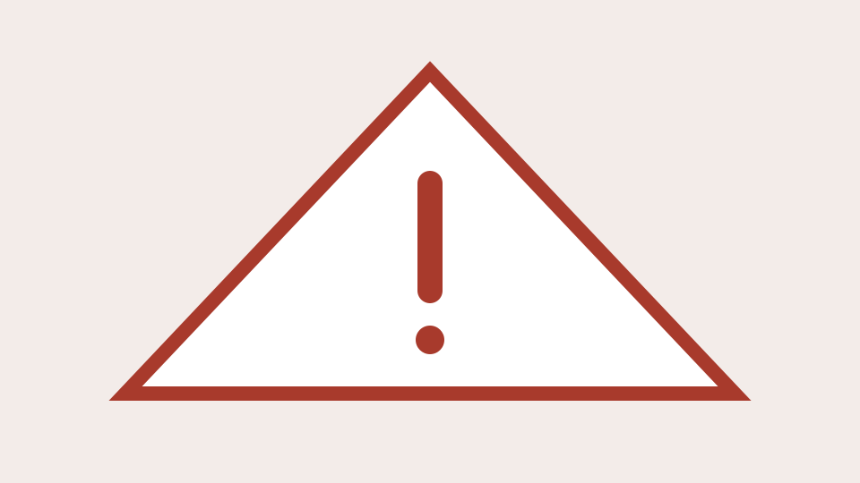

服务失联与“跑路机场”：如何识别信号并降低损失
解释服务失联和“跑路机场”搜索词背后的常见风险信号，提供基于公开事实的记录、核验与损失控制方法。

先说结论：短时故障不等于“跑路”，未经证实的信息也不应写成事实。 当服务异常时，最重要的是停止扩大损失、保存证据并通过合法渠道核验。
“跑路机场”通常在搜索什么
这是用户在服务长期不可用、官方渠道失联或退款困难时使用的搜索词。它表达风险担忧，但不是对某个具体主体的法律定性。
需要关注的组合信号
单一信号很少能证明原因。以下现象同时出现且持续存在时，风险值得提高关注：
- 多个官方入口长时间不可用；
- 原有支持渠道停止响应，且没有可核验公告；
- 退款或履约规则突然改变；
- 在异常期间仍高强度推动长周期预付；
- 运营主体和条款信息被删除或频繁变更。
如何区分事实与传言
记录你亲自观察到的时间、页面状态和订单信息；把他人帖子标记为“用户反馈”；把原因推测明确写成“尚未证实”。不要公开他人的个人信息或凭据。
降低潜在损失
停止续费或追加购买，保存合同、支付凭证、公告和沟通记录。检查支付渠道的争议处理规则；确有消费纠纷时，可向有管辖权的平台或消费者组织咨询。
购买前如何把风险降到最低
第一次使用只选择月付、小额或最低档套餐，把最大预付损失控制在一个月以内。不要因为限时倒计时、永久套餐或异常低价年付而忽略退款条件。重要工作准备独立备用方案，账户只保留近期所需余额，并为重要账户使用独立密码和多因素验证。
服务失联后应该做什么
先停止续费和充值，再保存订单、支付、公告、客服沟通和错误页面。撤销失效订阅并清理客户端配置；如果复用了密码，应立即修改相关账户密码。随后按照支付平台规则咨询争议处理，并在能够确认经营主体时通过合法消费者权益渠道反映问题。
不要购买陌生人提供的“内部恢复”“退款追回”或账户迁移服务，也不要通过攻击、未授权访问或公开个人信息的方式维权。
编辑部的案例标准
风险案例页只记录可公开核验的时间线，区分服务方声明、用户反馈和编辑判断，并持续标注更新时间。没有足够证据时，不对故障原因作确定结论。
合规提示：维权与核验应通过合法渠道进行。不要尝试未经授权访问系统、攻击服务或公开他人敏感信息。
常见问题
短时无法访问能否认定服务跑路？
不能。短时故障可能由维护、网络、域名或第三方系统引起。认定具体原因需要持续观察和可核验信息。
发现异常后最先做什么？
停止追加付款，保存订单与公开沟通记录，检查官方公告与合同条款，并通过合法渠道维护权益。
信息来源与参考资料
- 全国消协智慧315平台｜中国消费者协会（访问于 2026/10/3）
本文最后更新于 2026年10月3日。价格、服务条款与可用性可能变化，请以服务商公开页面为准，并遵守所在地法律法规及相关服务条款。